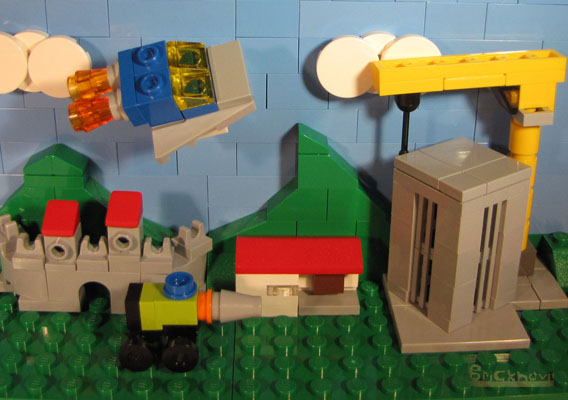

Home
Gallery
About
Follow me
Fun
Which kind of original (non-licensed) LEGO theme are you?

Take this quiz to find out!
What is your main quality?
I'm entertaining!
I am down to Earth.
I can fill any role.
I am very ingenuitive.
I look to the skies and beyond for inspiration.
What is your stance on Minifigs?
I need them!
I don't use them often.
I use them for some models here and there.
How complex do you prefer your sets to be?
I enjoy complexity, even with small sets.
Depends on how big or small the set is.
What do you think about alternate models?
I love them!
They're nice, but I don't need them.
What do you think about fantasies?
I only like ones with magic and magical creatures.
They're okay, I prefer down-to-Earth stuff though.
Fantasy of any kind is fine with me.
I'm okay with them as long as weaponized vehicles are included.
I prefer ones without magic.
What is your stance on violence?
I don't like modern weapons.
Only if it is light violence with no projectile-based weaponry.
I prefer peaceful scenarios.
Yahhh-hooo! Violence! Lets go in gung-ho!
How do you like your vehicles?
I like them big, sturdy, and with some functions!
I like ones with big engines and even bigger weapons!
They must not be modern.
They must be modern and somewhat peaceful.
What do you think about stories?
A story is good, and all you need for one is two warring factions.
A story is essential, whether if it is only one comic or a TV special.
I like it when builders make up their own stories.
Are you ready?
Click here to find out what kind of LEGO theme you are!